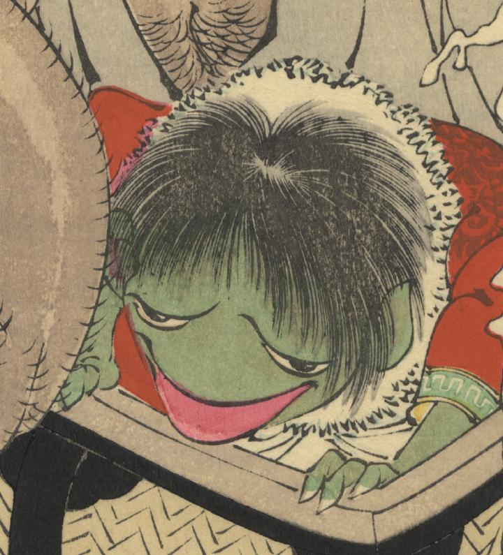

← 图鉴索引

つづらの中から出てきた、河童のような姿の妖怪。体色は緑で、赤い着物を着ている。
著作者：芳年／出典：親書誌：U426_nichibunken_0428：おもゐつゝら／日付：2016／資源識別子：U426_nichibunken_0428_0001_0004
Copyright (c)2010- International Research Center for Japanese Studies, Kyoto, Japan. All rights reserved.